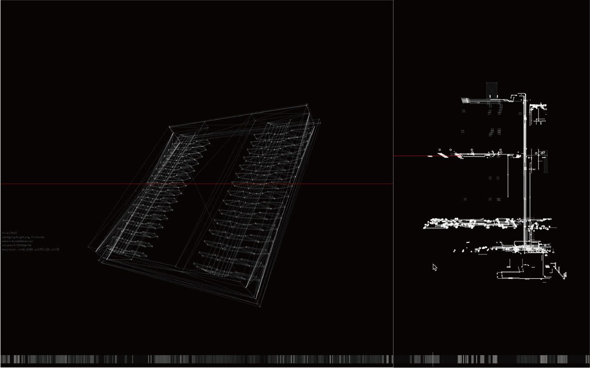
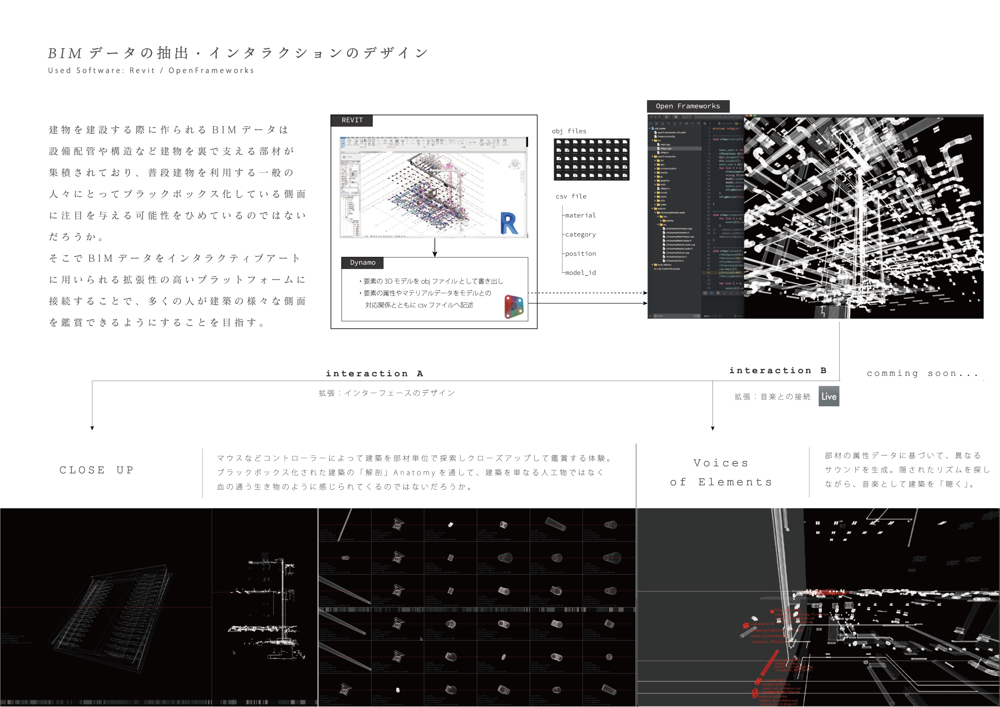
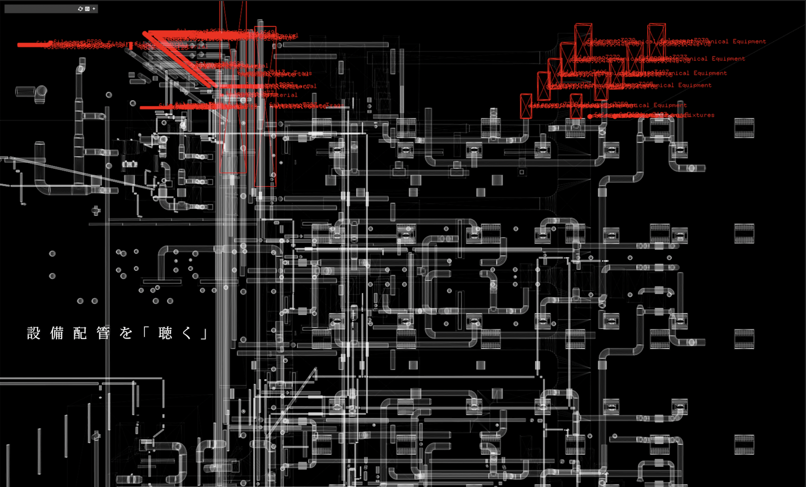

Architecture Anatomy


Interactive BIM allows us to access the hidden world of architecture 🚪
This is an interface for accessing all elements of a building that are not visually accessible to us in our daily lives.
Through the process of converting BIM data into sound and visuals in real time, we can recognize and feel that buildings consist of many parts, each with its own shape and universe...


made with Revit / OpenFrameworks / Ableton Live
🖥️